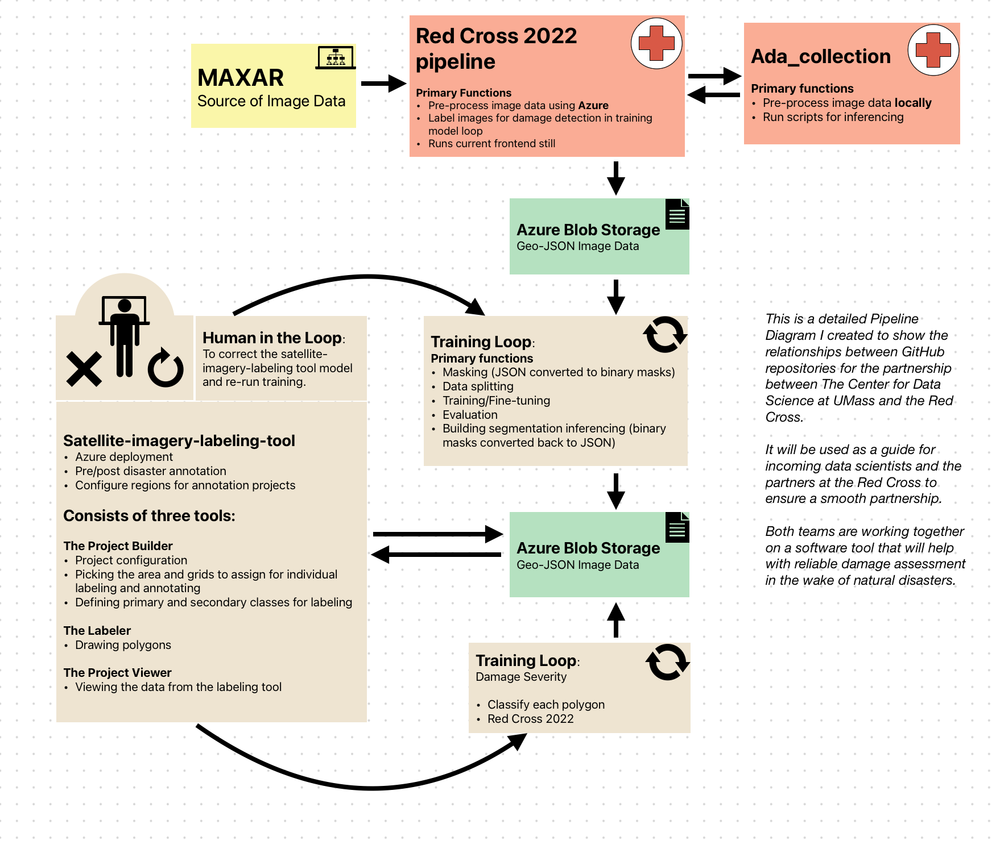
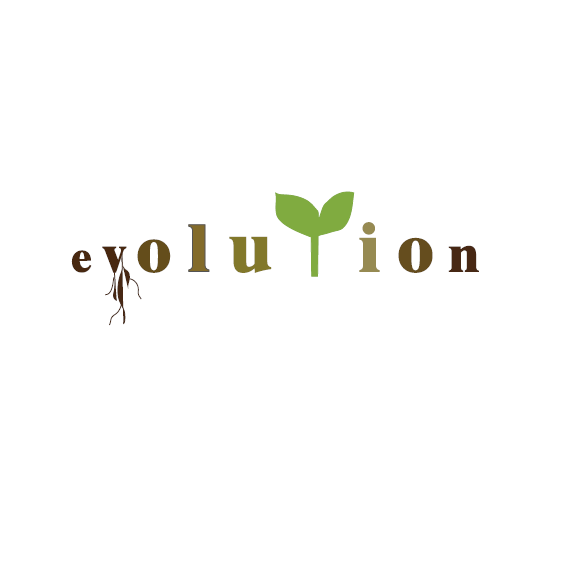
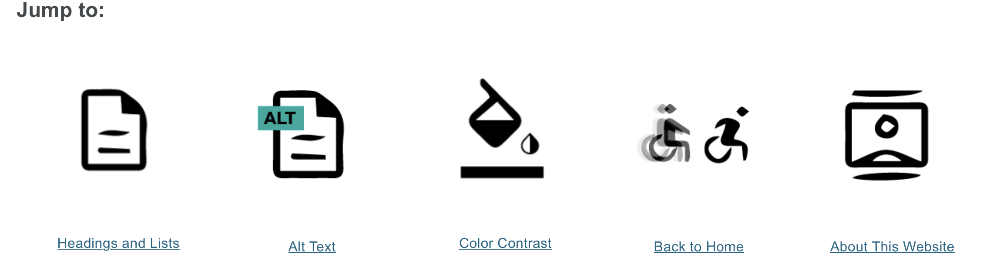
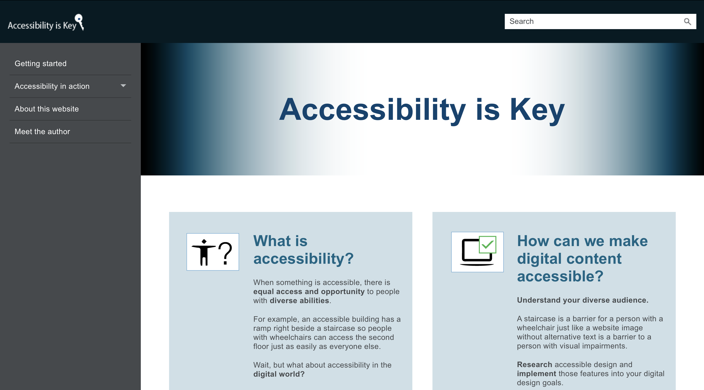

Technical Writing Samples
Published Article on NASA's Electromagnetic Anechoic Chamber (PDF)
The following writing sample is the final published version of the article that I wrote during my internship at NASA's Goddard Space Flight Center. I interviewed the antenna engineers that work with the Electromagnetic Anechoic Chamber (a radio-proof chamber that is used to test the antennas of spacecraft) in order to learn more about the chamber. I also worked with the Office of Communications at Goddard to write this complex article in a way that is understandable for the general public. The article is published at NASA's official website.
Overview Flyer for NASA's PACE Mission Event (PDF)
The following sample is a booth flyer that I designed for NASA's Plankton, Aerosol, Cloud, and ocean Ecosystem (PACE) mission event. The flyer will be displayed at the event, providing an overview of all that was learned during the educational PACE Card Matching Game.
Handout for Volunteers at PACE Mission Event (PDF)
The following sample is a volunteer handout that I designed for NASA's Plankton, Aerosol, Cloud, and ocean Ecosystem (PACE) mission event. This informational handout will be given to scientists at NASA that have volunteered to work a booth and facilitate the PACE Card Matching Game.
Instructions for NASA's PACE Card Matching Game (PDF)
The following sample shows card game instructions that I wrote for NASA's Plankton, Aerosol, Cloud, and ocean Ecosystem (PACE) mission event. These instructions will be given to scientists at NASA that have volunteered to work a booth and facilitate the PACE Card Matching Game.
Early Article Draft on NASA's Electromagnetic Anechoic Chamber (PDF)
The following writing sample is an early draft of the article that I wrote during my internship at NASA's Goddard Space Flight Center. I interviewed the antenna engineers that work with the Electromagnetic Anechoic Chamber (a radio-proof chamber that is used to test the antennas of spacecraft) in order to learn more about the chamber. I also worked with the Office of Communications at Goddard to write this complex article in a way that is understandable for the general public.
Documentation for the UMass Center for Data Science and Red Cross project (PDF)
The following writing sample consists of about 4 pages of work that I worked on for my internship with The Center for Data Science and Red Cross project. I updated, edited, and added to this documentation, which explains how to use one component (called the "Project Builder") of the satellite imagery labeling tool's user interface, specifically for a Red Cross use case (for building a project to label map imagery for building segmentation and damage assessment for timely and reliable disaster relief efforts).
Website Content and Copy Editing for The Center for Data Science (PDF)
The following writing sample is excerpted from the writing that I did for the Center for Data Science's new in-progress website. It shows my drafting and reviewing process, as well as comments from both myself and my supervisor.
Pipeline Diagram for The Center for Data Science and Red Cross Partnership (PNG)
 The following sample is a detailed Pipeline Diagram I created to show the relationships between GitHub repositories for the partnership between The Center for Data Science at UMass and the Red Cross. It will be used as a guide for incoming data scientists and the partners at the Red Cross to ensure a smooth partnership. Both teams are working together on a software tool that will help with reliable damage assessment in the wake of natural disasters.
Wireframe for The Center for Data Science's Unity Cluster Website (PDF)
The following sample is a wireframe idea that I proposed to the software engineers in charge of the Unity Cluster website at UMass Amherst's Center for Data Science. They are currently in the process of updating the current website's design.
Copy Editing for The Center for Data Science's Unity Cluster Website (PDF)
The following writing sample shows editing I did for UMass Amherst's Center for Data Science's Unity Cluster website, which they are currently in the progress of updating. I included tips and suggestions on how to improve grammar and clarity throughout the website. This sample also includes the wireframe idea from the above sample.
InDesign Flyer (PDF)
The following sample is a flyer for a school event that I designed using Adobe InDesign. This sample was an assignment from one of my Professional Writing and Technical Communication program courses.
InDesign Magazine (PDF)
The following sample is a magazine spread that I designed using Adobe InDesign. This sample was an assignment from one of my Professional Writing and Technical Communication program courses.
InDesign Typography Exercise (PNG)
 The following sample shows a typography exercise that I completed using Adobe InDesign. This exercise was an assignment from one of my Professional Writing and Technical Communication program courses. The assignment instructions were to pick a word from a designated list and create a design that relates to the chosen word.
Illustrator Icons (PNG)
 The following sample shows icons that I designed using Adobe Illustrator. This exercise was part of an assignment from one of my Professional Writing and Technical Communication program courses. I created these icons for my Digital Accessibility website, which I designed using MadCap Flare. A preview of the website is shown in the sample below.
Accessibility is Key - MadCap Flare Website (Web Archive)
 The following sample is a website, called Accessibility is Key, that I wrote and designed to educate viewers on digital accessibility. I created this website using Adobe MadCap Flare. This website was an assignment from one of my Professional Writing and Technical Communication program courses.
Using Microsoft Word for Engineers: Formatting a Test Report (PDF)
The following writing sample is a 25-page manual I wrote that documents Microsoft Word, specifically for novice engineers (or those who need a refresher) looking to format a test report. I produced this sample in my Professional Writing and Technical Communication 1 course during Fall of 2022.
Grant proposal for Ludlow Market Day (PDF)
The following writing sample is a 20-page grant proposal I wrote for putting together a "Ludlow Market Day" in my hometown (Ludlow, Massachusetts), and was produced in my Introduction to Professional Writing course during Fall of 2022.